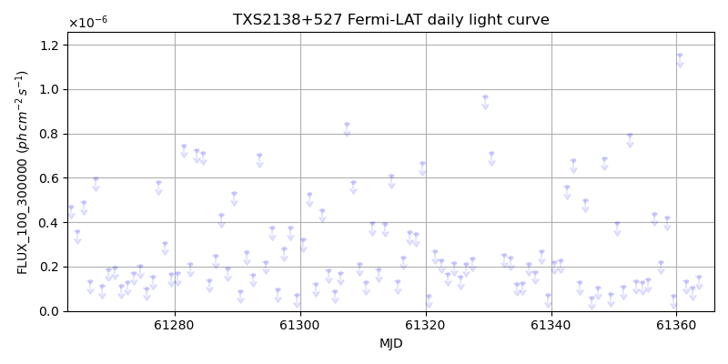
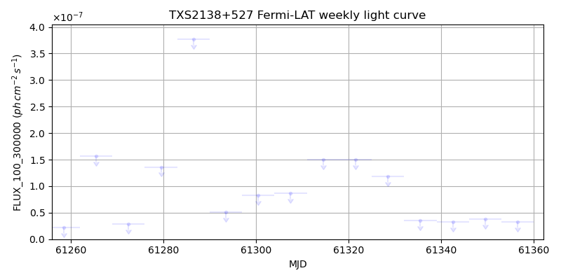
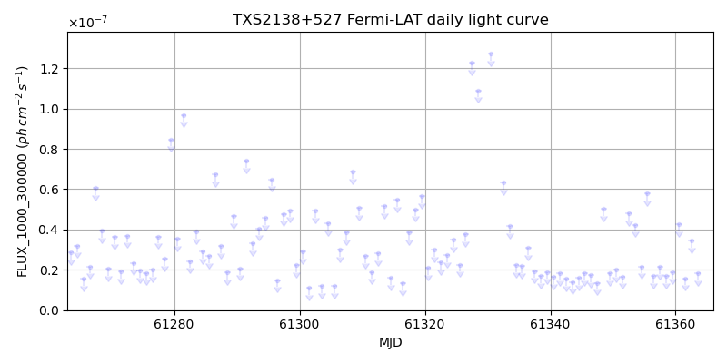
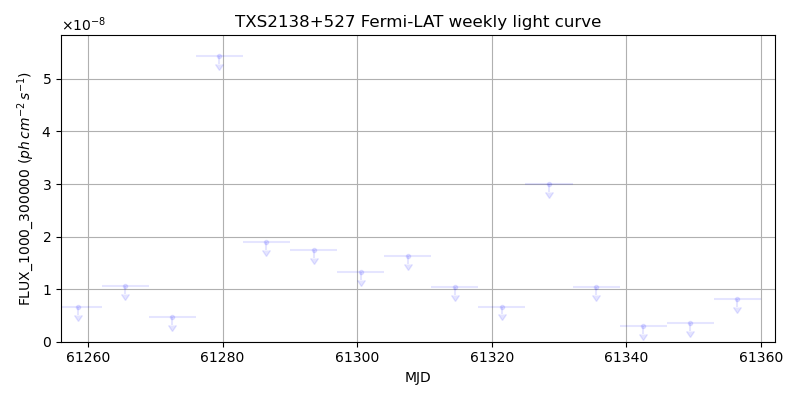

LAT Lightcurve site: https://fermi.gsfc.nasa.gov/ssc/data/access/lat/msl_lc/source/TXS_2138p527
NED: Query
Time of last update of this page: UT: 2026-11-20 16:28 (MJD: 61364.687)
| Property | Value |
|---|---|
| R.A. | 21:39:53.52 |
| Dec. | 53:00:18.0 |
| z | 0.000 |
| 3FGL SpectrumType | |
| 3FGL PL Index | -1.00 |
| 3FGL Flux_100_300000 | -1.00e+00 |
| 3FGL Flux_1000_300000 | -1.00e+00 |
| 3FGL Flux >200 GeV | -1.00e+00 |
| 3FGL Extrap. Crab >200 GeV | -1.00 |
| 3FGL Flux After EBL Absorption >200GeV | -1.00e+00 |
| 3FGL EBL Crab Fraction >200GeV | -1.00 |

| MJD | dMJD | Flux | dFlux | Frac3FGL | FracCrab>200GeV | EBLFracCrab>200GeV |
|---|---|---|---|---|---|---|
| 61359.50 | 0.50 | 6.74e-08 | 0.00e+00 | 0.00 | 0.00 | -0.00 |
| 61360.50 | 0.50 | 1.15e-06 | 0.00e+00 | 0.00 | 0.00 | -0.00 |
| 61361.50 | 0.50 | 1.34e-07 | 0.00e+00 | 0.00 | 0.00 | -0.00 |
| 61362.50 | 0.50 | 1.05e-07 | 0.00e+00 | 0.00 | 0.00 | -0.00 |
| 61363.50 | 0.50 | 1.54e-07 | 0.00e+00 | 0.00 | 0.00 | -0.00 |

| MJD | dMJD | Flux | dFlux | Frac3FGL | FracCrab>200GeV | EBLFracCrab>200GeV |
|---|---|---|---|---|---|---|
| 61328.50 | 3.50 | 1.18e-07 | 0.00e+00 | 0.00 | 0.00 | -0.00 |
| 61335.50 | 3.50 | 3.47e-08 | 0.00e+00 | 0.00 | 0.00 | -0.00 |
| 61342.50 | 3.50 | 3.22e-08 | 0.00e+00 | 0.00 | 0.00 | -0.00 |
| 61349.50 | 3.50 | 3.80e-08 | 0.00e+00 | 0.00 | 0.00 | -0.00 |
| 61356.50 | 3.50 | 3.20e-08 | 0.00e+00 | 0.00 | 0.00 | -0.00 |

| MJD | dMJD | Flux | dFlux | Frac3FGL | FracCrab>200GeV | EBLFracCrab>200GeV |
|---|---|---|---|---|---|---|
| 61359.50 | 0.50 | 1.90e-08 | 0.00e+00 | 0.00 | 0.00 | -0.00 |
| 61360.50 | 0.50 | 4.27e-08 | 0.00e+00 | 0.00 | 0.00 | -0.00 |
| 61361.50 | 0.50 | 1.58e-08 | 0.00e+00 | 0.00 | 0.00 | -0.00 |
| 61362.50 | 0.50 | 3.44e-08 | 0.00e+00 | 0.00 | 0.00 | -0.00 |
| 61363.50 | 0.50 | 1.83e-08 | 0.00e+00 | 0.00 | 0.00 | -0.00 |

| MJD | dMJD | Flux | dFlux | Frac3FGL | FracCrab>200GeV | EBLFracCrab>200GeV |
|---|---|---|---|---|---|---|
| 61328.50 | 3.50 | 3.00e-08 | 0.00e+00 | 0.00 | 0.00 | -0.00 |
| 61335.50 | 3.50 | 1.04e-08 | 0.00e+00 | 0.00 | 0.00 | -0.00 |
| 61342.50 | 3.50 | 2.94e-09 | 0.00e+00 | 0.00 | 0.00 | -0.00 |
| 61349.50 | 3.50 | 3.57e-09 | 0.00e+00 | 0.00 | 0.00 | -0.00 |
| 61356.50 | 3.50 | 8.11e-09 | 0.00e+00 | 0.00 | 0.00 | -0.00 |
--------------------------------------------------------- Using user-supplied coords: 21:39:53.52 53:00:18.0 2000 --------------------------------------------------------- FLWO UT night of: 2026-11-21 Local Sid. @ Midnight: 03:37 Sunset (-15.0) (local, UT): 18:33 01:33 Sunrise (-15.0) (local, UT): 05:47 12:47 Moonrise (local, UT): Moonset (local, UT): 03:40 10:40 Moon phase: 0.85 --------------------------------------------------------- AzTime LSID UT Obj_el Obj_az Mn_el Mn_az Sep. --------------------------------------------------------- 18:33 22:09 01:33 67.9 348.7 47.9 117.4 58.0 19:03 22:39 02:03 66.1 338.1 53.3 125.0 58.0 19:33 23:09 02:33 63.3 329.9 58.2 134.7 58.0 20:03 23:39 03:03 59.8 323.9 62.3 146.9 57.9 20:33 00:09 03:33 55.8 319.9 65.1 162.1 57.9 21:03 00:39 04:03 51.6 317.3 66.3 179.7 57.8 21:33 01:09 04:33 47.2 315.8 65.4 197.5 57.8 22:03 01:39 05:03 42.7 315.2 62.9 213.2 57.8 22:33 02:09 05:33 38.2 315.3 59.0 225.9 57.7 23:03 02:39 06:03 33.7 315.9 54.2 235.9 57.7 23:33 03:09 06:33 29.3 317.0 48.9 243.9 57.7 00:03 03:39 07:03 25.0 318.6 43.2 250.4 57.7 00:33 04:10 07:33 20.8 320.5 37.3 255.9 57.7 01:03 04:40 08:03 16.9 322.7 31.2 260.7 57.7 01:33 05:10 08:33 13.1 325.3 25.1 265.1 57.7 02:03 05:40 09:03 9.6 328.2 19.0 269.2 57.7 02:33 06:10 09:33 6.4 331.3 12.9 273.0 57.7 03:03 06:40 10:03 3.6 334.8 6.8 276.9 57.8 03:33 07:10 10:33 1.2 338.5 1.0 280.7 57.8 04:03 07:40 11:03 -0.6 342.5 -4.9 284.7 57.9 04:33 08:10 11:33 -1.8 346.7 -11.1 288.8 57.9 05:03 08:40 12:03 -2.7 351.0 -16.8 293.2 58.0 05:33 09:10 12:33 -4.2 355.5 -22.3 298.1 58.1 05:47 09:25 12:47 -4.6 357.7 -24.8 300.5 58.1 --------------------------------------------------------- Dark hours >55 deg.: 0.00